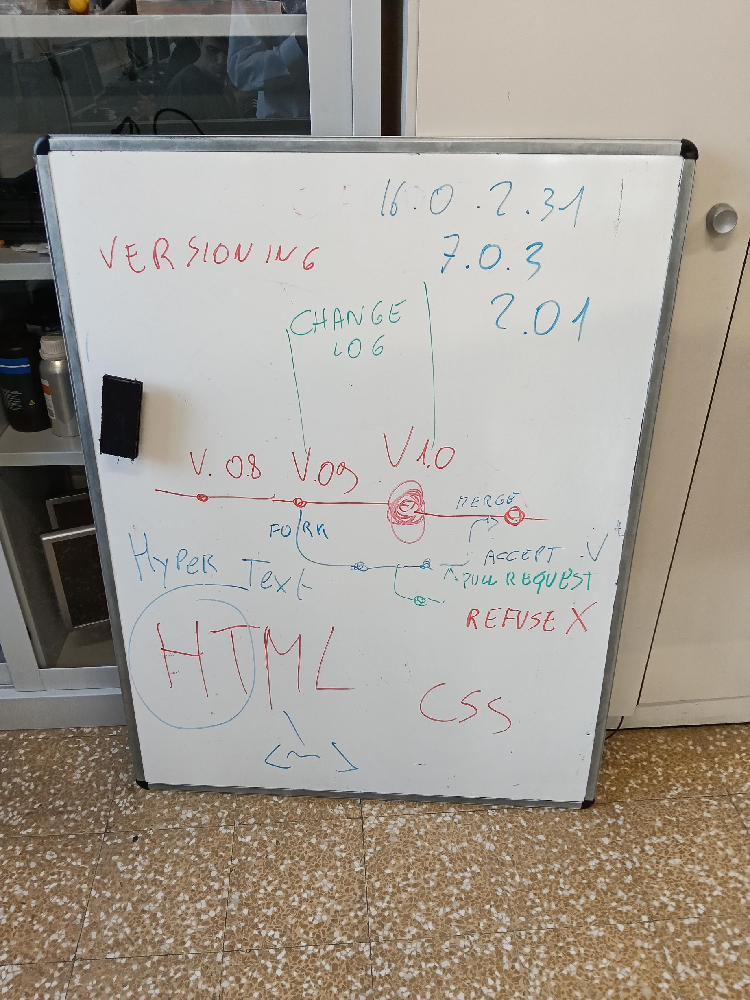

2INF · 12/10/2026
OGGI, martedì 13/10: il percorso di oggi
In basso vedi sempre il tuo andamento.
Il tuo percorso di lunedì
Come sta andando: i voti, il backlog e il monitor si aggiornano da soli.
I voti Il backlog Il monitor della lezione Cosa è cambiato oggi nel gioco La classifica Valutazione dei singoli (solo prof)
Dispensa a parte: come lavorano le aziende di software, il Manifesto Agile e le 10 regole che usiamo nel nostro treno.
Si apre in una scheda nuova: quando hai finito, chiudila e torni qui.

Sulla linea rossa le versioni (v0.8, v0.9, v1.0). In blu il fork che parte dalla v0.9. Sul ramo, le Pull Request: quella accettata (ACCEPT ✓) rientra con il MERGE, quella rifiutata (REFUSE ✗) resta fuori.
Ogni riga è una versione nata dalle vostre Pull Request (dal grafo delle versioni).
| Versione | Nome | Cosa è entrato e da quale Pull Request |
|---|---|---|
| v0.0 | Prima idea: il finestrino laterale | Il treno visto dal finestrino di lato: paesaggio che scorre, cattivi che sbucano da dietro alberi e case, vetro da 5 colpi. Poi la classe ha disegnato alla lavagna la vista dalla cabina. |
| v0.1-alfa | Demo del prof sul progetto della lavagna | Vista dalla cabina lungo i binari (progetto della classe), cattivi da finestre, alberi e barili, facce della classe e copertina disegnata con l'IA, tachimetro, installabile come app. Da qui la classe corregge il tiro. |
| v0.2 | I personaggi della squadra PERSONAGGI | Quattro personaggi disegnati con l'IA (tre agenti e il Boss dei cattivi), bottone «I personaggi», le loro facce nel gioco. Prima modifica arrivata dalla classe. |
| v0.3 | Più lento: richiesta della squadra TEST QUALITÀ | Prima richiesta di modifica consegnata su Classroom dalla Triade: «il gioco va troppo veloce». Velocità del treno da 1 a 0,7. |
| v0.4 | Audit degli investitori: personaggi nascosti che escono | Il cattivo è un personaggio intero nascosto dietro gli oggetti che esce di lato, più grande; treno al minimo (0,5); tolte 2 foto senza faccia. |
| v0.5 | Le regole della squadra MOTORE FISICA (Pull Request #104) | Prima Pull Request vera (#104) del capo MOTORE FISICA: cattivi sparano dopo 3 secondi, 100 punti per cattivo, velocità 0,5. Corretto 0,5 → 0.5 (in JSON i decimali vogliono il punto). |
| v0.6 | Il bosco bruciato della squadra SCENARI | Richiesta SCENARI: cielo rosso cupo, alberi bruciati e rottami fumanti vicino ai binari. Richiesta PERSONAGGI: il cattivo dice «Hahahahaha, perdente!» quando spara. |
| v0.7 | Omini interi che escono dal nascondiglio | Indicazione del prof: omini interi (testa, busto, braccia, gambe, arma) al posto dei cerchietti; si alzano da dietro il nascondiglio ed escono di lato con un «!»; quando li colpisci cadono. |
| v0.8 | Mimetica, facce senza cerchio e il fucile d'assalto | Indicazioni del prof: facce senza cerchio (solo la faccia), barretta del tempo sopra la testa, omini in mimetica, l'Agente Speciale con il fucile d'assalto. |
| v0.9 | Teste in proporzione | Indicazione del prof: la testa degli omini lontani era troppo grossa (misura minima fissa); ora è sempre in proporzione al corpo. |
| v0.10 | I migliori punteggi | Indicazione del prof: classifica dei primi 10 con soprannome a fine partita, mostrata nella schermata iniziale; record della classe da record-classe.json. |
| v0.11 | I punteggi si salvano sempre | Difetto segnalato dal prof: il punteggio ora si salva da solo a fine partita, il soprannome si conferma anche con Invio; il gioco chiede sempre alla rete la versione nuova. |
| v0.12 | La versione serale | PR di Mahammed M. (12/10, 12:23): «vorrei una versione serale». Cielo del tramonto nel Paese, in Montagna e al Mare. |
| v0.13 | Nuovo livello, nuovo scenario | PR di Ney V. (12:29) e Alejandro G. (12:45): quando si passa di livello cambia anche lo scenario. |
| v0.14 | Ultimo colpo | PR di Egor M. (12:31): quando il vetro si spacca c'è ancora 1 colpo da incassare. |
| v0.15 | La difficoltà cresce a ogni livello | PR di Antonio M. (12:38), prima parte: a ogni livello i cattivi sparano prima e arrivano più spesso. |
| v0.16 | Vetro da 10 colpi | PR1 di Katherine A. (12:53): il vetro regge 10 colpi invece di 5. |
| v0.17 | I cattivi non nascono più troppo vicino | PR3 di Luca B. (12:55), difetto: i cattivi nascevano troppo vicino o dietro e sparavano da dove non si potevano colpire. |
| v0.18 | BANG! e il cattivo cade a terra | PR di Ney V. (12:57), Egor M. (12:59) e Luca B. (12:51): BANG!, lampo rosso, il cattivo cade a terra; niente più coriandoli colorati. |
| v0.19 | Il mirino rosso | PR di Ney V. (12:59): il puntatore del mouse diventa un mirino rosso. |
| v0.20 | I cattivi si vedono sempre | PR di Egor M. (12:57), difetto: i nemici a volte escono male da case e palazzi e non si vedono. |
| v0.21 | Le luci dei palazzi non lampeggiano più | PR di Luca B. (13:01), difetto: le luci di case e palazzi lampeggiavano di continuo. |
| v0.22 | Il record accanto ai punti | PR di Youssef A. (13:04): il punteggio migliore si vede accanto al contatore e resta anche ricaricando la pagina. |
| v0.23 | Il bottone Pausa | PR di Lina A. (13:03): bottone Pausa in alto per fermare la partita e riprenderla. |
| v0.24 | Più avanti, più punti | PR di Luciano C. (13:14): più vai avanti nel gioco, più punti ti danno i cattivi. |
| v0.25 | Colpo preciso | PR di Giorgio A. (13:16): colpo preciso in testa = punti bonus. |
| v0.26 | Pioggia e nebbia | PR di Lina A. (13:10), Youssef A. (13:11), Riccardo B. (13:12) e Oscar F. (13:13): il meteo che rende più difficile vedere i cattivi. |
| v0.27 | Binari gialli | PR di Katherine A. (13:19): i binari diventano gialli, così si vedono meglio. |
| v0.28 | La barra del prossimo livello | PR di Luciano C. (13:16): una barra al centro in alto che indica quanto manca al prossimo livello. |
| v0.29 | Le statistiche a fine partita | PR di Giorgio A. (13:17): a fine partita cattivi colpiti, colpi sbagliati e precisione. |
| v0.30 | La sfera d'oro: punti x2 | PR di Francesco M. (13:27): ogni tanto compare una sfera; se la colpisci, per 10 secondi i punti valgono doppio. |
| v0.31 | Gli uccelli nel cielo | PR di Francesco M. (13:32): uccelli che passano nel cielo. |
Si apre in una scheda nuova: quando hai finito, chiudila e torni qui.
Nel vostro gioco funziona come in un'azienda vera. Tu proponi, il programma automatico legge, il prof decide, la versione nuova esce.
Quattro parti, sempre, nel Modulo o nel Documento. Esempio vero: la richiesta «Più lento», entrata nel gioco con la v0.3.
| Parte | Esempio |
|---|---|
| Titolo | Più lento |
| Cosa cambia nel gioco | il treno va più piano: la velocità passa da 1 a 0,7 |
| Dove | in tutto il gioco, dall'inizio |
| Perché | il gioco andava troppo veloce e non si riusciva a colpire i cattivi |
Due lavori, in ordine. Ognuno si apre in una scheda nuova: quando hai finito, chiudila e torni qui.
Il backlog: dove finisce la tua PR
Se il Modulo non funziona, scrivi la Pull Request nel Documento del compito su Classroom, con le stesse 4 parti.